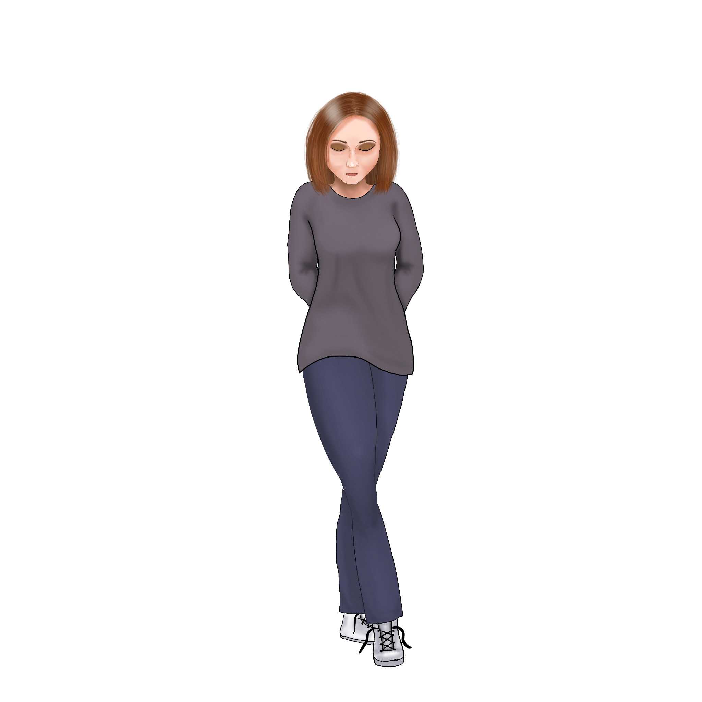
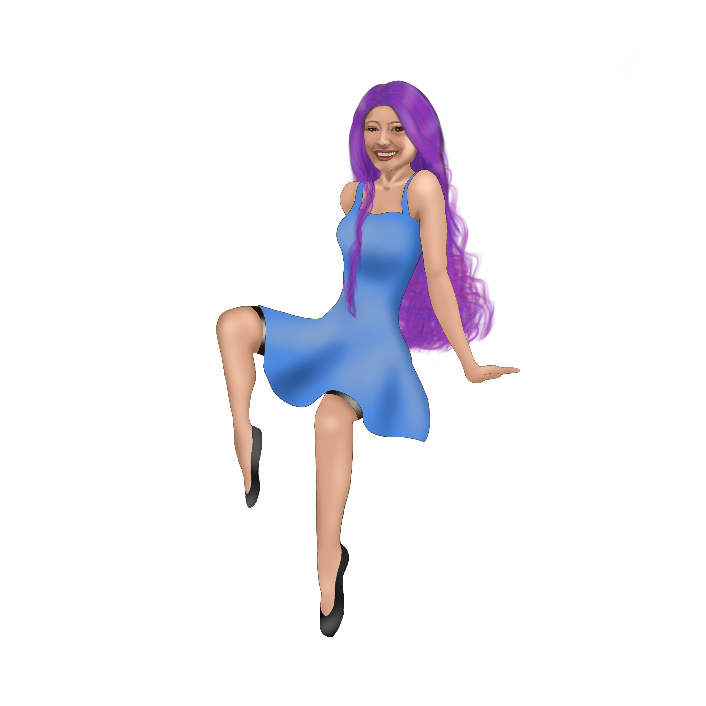
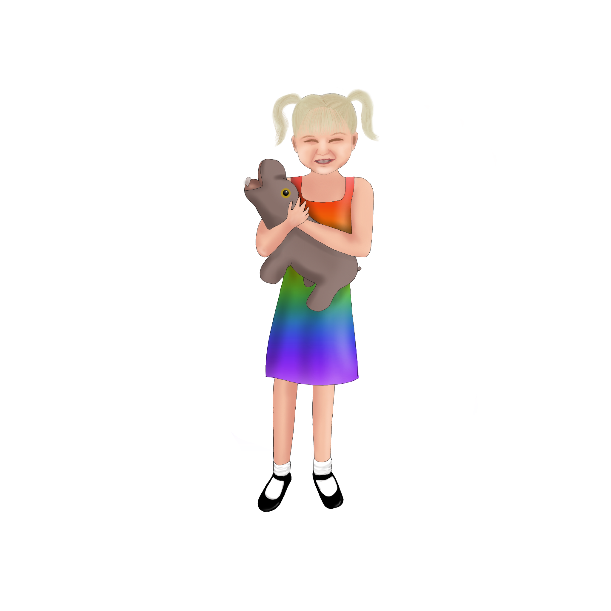
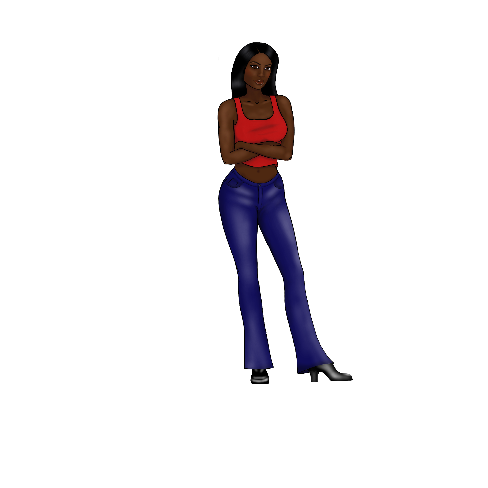
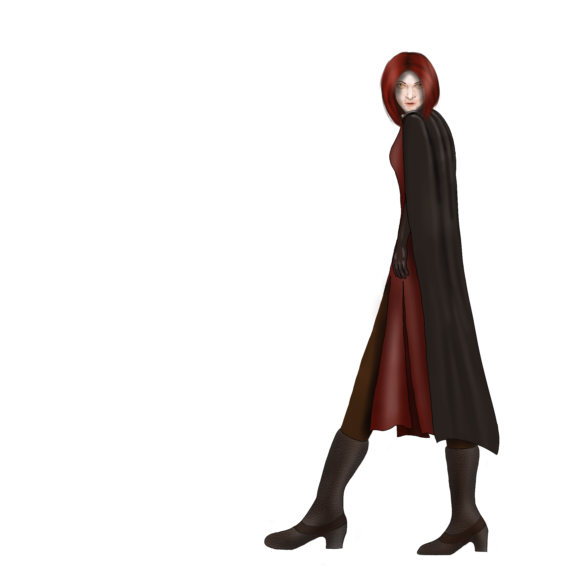

|  | Name: April Gender: Female Age: 39 Role: Core Hi all, I’m April. I’m the one whose name matches what is on our ID. Honestly, I cannot call myself the host, because the others are out more often than I am. I’ve had a hard time with this diagnosis and I’m still struggling with things. I’m married to the most wonderful, supportive man who has taught me trust and love. |
 | Name: Cali Gender: Female Age: 19 Role: Inner caretaker/Co-Host Hi guys!!! I’m Cali, I’m an artist. I just recently got back into doing artwork and have been loving it. I’m a pretty carefree person, don’t like to take life too seriously, and I love having fun. I take care of the littles in the inner world. I could go on, but they said to keep it short. Love ya! |
|  | Name:Gidget Gender: Female Age: 4-6 Role: Little/Co-Host Hi! I little, i not supposed to say my real name. I like playing games and watch movies with Mr. Scott. I happy Miss Cali drawed me with my favorite toy Gus-Gus. He my favorite because when you squeeze his tummy he toots! I like candy too! And I like to be silly and have fun. The bigs let me help with stuff some times because I like to help. Check out my TikTok Channel. |
 | Name: Mimic Gender: Female Age: NYOB Role: Protector/Co-Host My name is Mimic, I can be a bit of a b!tch and I’m totally fine with that. I tell sh!t how it is and I don’t apologize for the truth. I used to be a b!tch to April, but we’ve worked it out and now we’re teammates. I would eventually like to write a book and we would all like to contribute to creating a YouTube channel. |
|  | Name: Spirit Gender: Female Age: Unknown Role: It's Complicated I’m a ghost, I’m pretty private, and I’m really good at calling out bull$hit. |
| Name: Athena Gender: Female Age: 20s Role: Fragment | Name: B (Little) Gender: Male Age: 12 Role: Little/Fragement | Name: Ivanna Gender: Female Age: Ageless Role: Inner Protector` | Name: Shadow Gender: Spirit Age: Unknown Role: Gate Keeper I’m a ghost, I’m pretty private, and I’m really good at calling out bull$hit. |